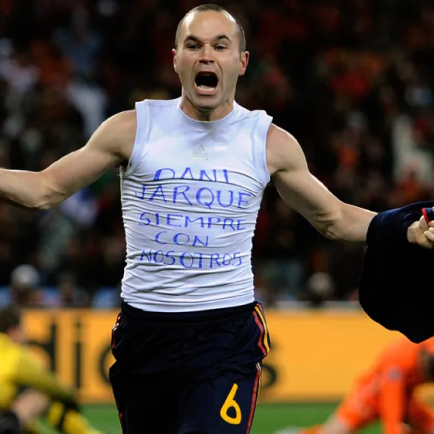
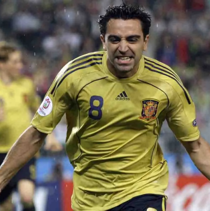
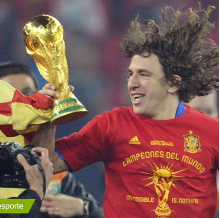
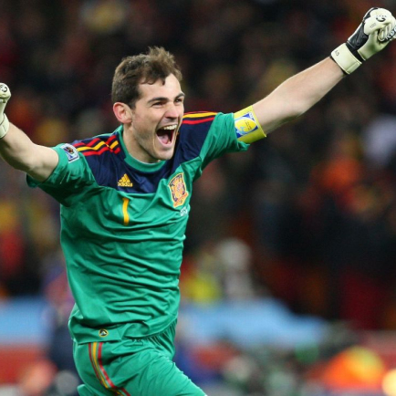

Seleção Espanhola
A primeira aparição internacional da "Fúria", como é conhecida a seleção da Espanha, aconteceu em 1920, por ocasião dos Jogos Olimpicos de Antuérpia. Na estréia, contra a seleção da Dinamarca - que tinha conquistado duas medalhas de prata nos Jogos de 1908 e 1912 - uma vitória por 1 x 0. Patricio marcou o primeiro gol oficial da seleçao espanhola. Eliminados nas quartas de final pela Bélgica (1x2), os espanhóis acabaram ganhando a medalha de prata.
Títulos

Ídolos
- 
- 
- 
- 
Andres Iniesta
Revelado no Barcelona, André Iniesta é considerado um dos meio campistas mais habilidosos da história do futebol.
Xavi
Xavi Hernández foi o símbolo de uma geração, o espelho de um estilo de jogo e o motor propulsor de um sistema. O meia, que se tornou um dos grandes jogadores da história do Barcelona e da seleção espanhola, absorveu quase que por osmose o Futebol Total de Cruyff, se espelhou em Pep Guardiola e foi além. Xavi chegou em La Masia, local onde ficam os jovens da base do Barcelona, ainda aos 11 anos. Na época, Johan Cruyff era o comandante de um Barcelona que entraria para a história conquistando a primeira Liga dos Campeões do clube.
Puyol
Começou no Barcelona B em 1997, sendo promovido à equipe principal do Barcelona dois anos depois, onde jogou como titular. Tido como um dos melhores zagueiros da atualidade, costumava jogar duro, mas destacava-se por cometer poucas faltas e pela marcação. O treinador Louis Van Gaal tentou colocá-lo em várias posições, como meio-campista e lateral-direito, porém só conseguiu se fixar na defesa.
Cassilas
Foi o capitão da Espanha durante a Copa do Mundo FIFA de 2010, em que os espanhóis sagraram-se pela primeira vez campeões mundiais. Após a conquista mundial com a Seleção Espanhola, foi eleito o melhor goleiro (ou guarda-redes) da Copa do Mundo, conquistando a Luva de Ouro.[1] Liderou a Seleção também na conquista das Eurocopas de 2008 e 2012, tornando a Espanha a primeira bicampeã consecutiva do torneio em toda a história do futebol europeu. No dia 1 de julho de 2012, com a goleada por 4 a 0 contra a Itália na final da Euro 2012, Casillas tornou-se o primeiro futebolista na história a completar 100 vitórias atuando por sua Seleção.